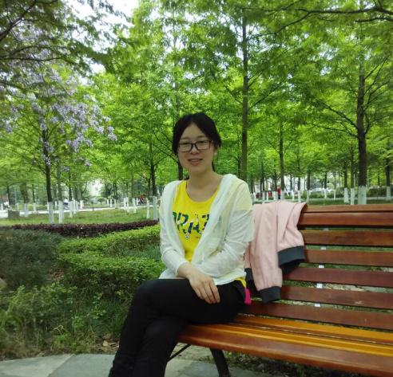

<董文秀

个人简介：
项目中职责：
性格开朗，处事乐观，喜欢交友，旅游，爱好电脑、科普知识。追求人格的自我完善，人际关系和谐，适应环境能力较强，习惯事情或问题及早解决。最大的满足感在于该做的事顺利完成，以便有精力去关注其他感兴趣的事情。
AppAnyway Demo 页面开发、测试。
博客地址：http://blog.csdn.net/forever_yq
邮箱：1554136322@qq.com
技能：掌握 HTML/HTML5，CSS/CSS3，熟悉 DIV+CSS 布局，能完成手机、网站页面制作；熟悉 Javascript、Java、Sql Server、MySQL；熟练使用前端开发框架库类 jQuery，能基于框架写基本扩展应用；熟练使用 PS，Fireworks 切图，熟悉页面架构和布局。
特长：排球、日语、长跑
座右铭：人因梦想而伟大，因学习而改变，更因行动而成功！
所获荣誉：国奖励志奖学金、院学习成绩优秀奖。